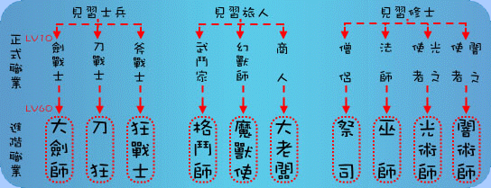

|
 【大劍師】：保持原劍戰士基本特色，而成為單一目標物理攻擊最強的角色。
【刀狂】：擁有大範圍物理攻擊的特色，在轉職後修正部份屬性的影響，使其在整體戰力表現上的影響較為平衡，相對的，大範圍攻擊的能力會更加強化（續戰力下降，但一對多的戰鬥效率提升）。
【狂戰士】：加強斧系技能的特殊功能、技能偏向強化命中率及威力，部份技能的特殊效果還能得到百分之百的成功率。
《旅人系》 【格鬥師】：強調攻擊精確性，減少亂數影響的部份，成為擁有特色的肉搏角色。
【魔獸使】：特殊輔助型職業，擁有全隊獸化幻獸的增強技能，特色鎖定為提升全隊幻獸的戰力角色，且擁有提升捕捉機率的技能而成為進階幻獸的獵人。
【大老闆】：特殊工作型職業，擁有在戰鬥之中額外增加隊伍收入的能力，以及部份有趣的技能，強調該職業打寶、賺錢等等特色。
《修士系》 【祭司】：法術輔助型職業，專長為提升全體人員的屬性、攻擊、防禦等種種效果，能有效縮短戰鬥時間，並提升隊伍續戰能力。
【巫師】：法術攻擊型職業，以魔法攻擊敵人，專精各屬性的攻擊型法術，再加上巫師得以強化信仰影響的效能，變成擁有多樣化選擇的巫師職業。
【光術師】：法術輔助型職業，特有的技能補血、復活，成為組隊效益極高的角色，進階職業的型態提升回復效率以及威力，是隊伍面臨強力敵人的重要角色。
【暗術師】：法術攻擊型職業，以弱化敵人能力來提升整體戰力為主，闇系攻擊法術為輔，除了能有效提升整體戰力外，還能弱化敵人。
|
||||||||||||||||||||||||||||||||||||||||||||||||||||||||||||||||||||||||||||||||||||||||||||||||||||||||||||||||||||||||||||||||||||||||||||||||||||||||||||||||||||||||||||||||||||||||||||||||||||||||||||||||||||||||||||||||||||||||||||||||||||||||||||||||||||||||||||||||||||||||||||||||||||||||||||||||||||||||||||||||||||||||||||||||||||||||||||||||||||||||||||||||||||||||||||||||||||||||||||||||||||||||||||||||||||||||||||||||||||||||||||||||||||||||||||||||||||||||||||||||||||||||||||||||||||||||||||||||||||||||||||||||||||||||